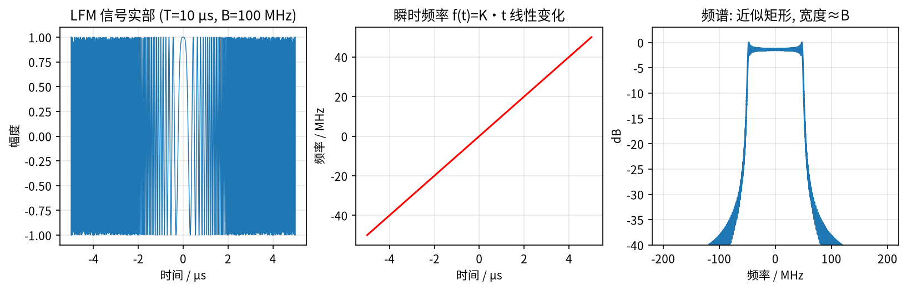
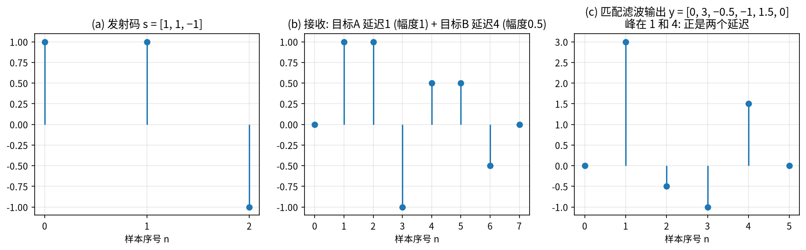
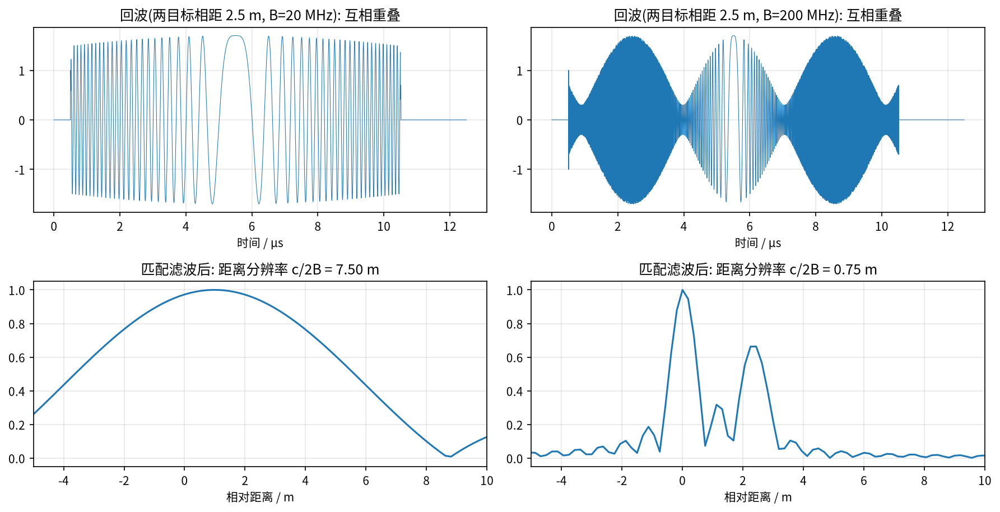
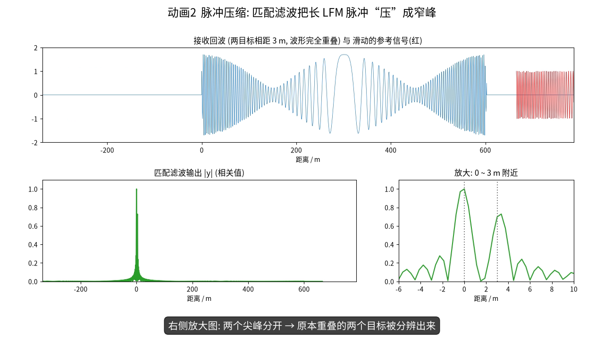
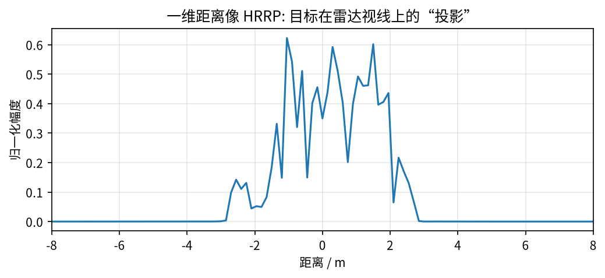

第 1 章 雷达基础：回波、LFM 与脉冲压缩¶
本章目标
- 用“信号与系统”的语言写出雷达回波模型，理解“时延 ↔ 距离”“相位 ↔ 距离的细微变化”；
- 理解为什么雷达要发射线性调频（LFM）信号，以及匹配滤波 / 脉冲压缩如何把长脉冲“压”成窄峰（先用一个 3 位码手算，再推导 LFM）；
- 一步步推导并记住距离分辨率公式 \(\rho_r = c/(2B)\)，会用它做数值估算。
基础回链
本章用到的基础： 复数与相位（→ 第 0.1 节）、I/Q 与基带（→ 第 0.2 节）、傅里叶变换的时移性质（→ 第 0.3 节）、相关与卷积（→ 第 0.6 节）。
1.1 雷达在做什么：一句话版本¶
直觉
类比：对着山谷喊话。 你喊一声，过了 2 秒听到回声，声速约 340 m/s，声音来回走了 680 m，所以山崖在 340 m 外。雷达做的是同一件事，只不过“喊”的是电磁波，速度是光速 \(c\)。
雷达发射一段已知的电磁波 \(s_t(t)\)。电磁波碰到目标后，有一小部分反射回来。接收机收到的是发射信号的副本：它被延迟了、衰减了，还可能带有多普勒频移。若目标距离为 \(R\)，电磁波往返一次走 \(2R\)，所以往返时延为
所以“测距离”本质上就是“测时延”。例如目标在 300 km 外，\(\tau = 2\times 3\times10^5 / (3\times10^8) = 2\) ms；目标距离差 1.5 m，时延差只有 \(2\times1.5/(3\times10^8) = 10\) ns。
1.2 回波模型¶
把发射信号写成“复包络 × 载波”的形式。这正是信号与系统里调制的写法：
各符号的含义：
- \(f_c\)：载频，如 X 波段 10 GHz。它决定波长 \(\lambda = c/f_c\)（10 GHz 时为 3 cm）；
- \(u(t)\)：基带复包络，描述“脉冲长什么样”，变化比载波慢得多；
- \(e^{j2\pi f_c t}\)：以 \(f_c\) 高速旋转的箭头（→ 第 0.1 节）。
设一个散射系数为 \(\sigma\) 的点目标（\(\sigma\) 是复数：\(|\sigma|\) 表示反射强弱，\(\angle\sigma\) 是反射引起的固定相移）。它的回波就是发射信号延迟 \(\tau\)、再乘以 \(\sigma\)：
下变频就是乘以 \(e^{-j2\pi f_c t}\)，把载波去掉（对应第 0.2 节的 I/Q 解调）。推导分三步：
第二行中两个 \(e^{\pm j2\pi f_c t}\) 抵消了。第三行代入 \(\tau = 2R/c\)，再用 \(f_c/c = 1/\lambda\)。
式 (1.4) 里有两个非常重要的“距离信息载体”：
- 包络时延 \(u(t-2R/c)\)：粗略地告诉我们目标在哪个“距离单元”；
- 相位 \(e^{-j4\pi R/\lambda}\)：\(\lambda\) 只有几厘米，距离变化 \(\lambda/4\) 就让相位变化 \(\pi\)。例题 0.2 算过：半厘米对应 120°。后面 ISAR 的横向成像，利用的正是这个相位随时间的变化（即多普勒）。
直觉
一粗一细两把尺子。 包络是“米尺”，只能量到距离单元（比如 0.15 m）这一级；相位是“游标卡尺”，能感受到毫米级的变化，但读数每隔 \(\lambda/2\) 就重复一次（相位缠绕）。ISAR 两把尺子都要用。
易错点
小贴士 / 易错点。 “相位对距离极其敏感”这一点贯穿全文。它是 ISAR 能获得横向分辨率的原因；它也是目标运动不平稳时图像“散焦”的根源；它还是 CV-GNN、CvPGT 坚持使用复值网络、保留相位信息的物理动机。
1.3 为什么要用线性调频（LFM）信号¶
我们希望同时做到两件事：
- 距离分辨率高：两个相距很近的目标，回波要能分开。直觉上脉冲越窄越好；
- 作用距离远：回波能量要足够。能量 = 功率 × 时长，而发射机峰值功率有限，所以需要脉冲长。
“窄”和“长”是矛盾的。
例题
例题 1.1（矛盾有多尖锐）。 想要 1.5 m 的距离分辨率，两个目标的时延差只有 10 ns（见 1.1 节）。如果用一个简单的矩形脉冲，脉宽也必须约 10 ns。
若发射机峰值功率 1 kW，单个脉冲的能量只有 \(10^3\times10^{-8} = 10^{-5}\) J。改用 \(T_p = 10\ \mu\text{s}\) 的长脉冲，能量提高 1000 倍。可是此时脉冲在空间中的长度为 \(cT_p/2 = 1500\) m，所有距离差小于 1500 m 的目标回波都会重叠在一起。
解决办法是：发射一个长而宽带的信号，再在接收端用信号处理把它“压缩”成窄脉冲。最常用的是线性调频信号（LFM，也叫 chirp）：
符号说明：
- \(\mathrm{rect}(t/T_p)\)：矩形窗，\(|t|\le T_p/2\) 时为 1，其余为 0，表示脉冲持续 \(T_p\)；
- \(K\)：调频斜率（Hz/s），表示“频率每秒升高多少”；
- \(B\)：扫过的带宽（Hz）。
为什么叫“线性调频”。 瞬时频率等于相位对时间的导数再除以 \(2\pi\)：
所以频率从 \(-KT_p/2 = -B/2\) 线性升到 \(+B/2\)，在脉宽 \(T_p\) 内扫过带宽 \(B\)。
直觉
类比：鸟叫（chirp）。 这种信号听起来像“啾——”一声由低到高的鸟鸣。每个时刻的音调不同，所以回波的“每一小段”都带着自己的时间标签。接收机只要把各段“对齐”，就能把长脉冲压成一个窄峰。
例题
例题 1.2（LFM 参数）。 \(T_p = 10\ \mu\text{s}\)，\(B = 100\) MHz：
- 调频斜率 \(K = B/T_p = 10^8/10^{-5} = 10^{13}\) Hz/s；
- 时宽带宽积 \(T_pB = 10^{-5}\times10^8 = 1000\)；
- 压缩前脉冲的空间长度 \(cT_p/2 = 1500\) m；压缩后分辨率 \(c/2B = 1.5\) m，正好缩小到 \(1/1000\)（式 (1.13) 将证明）。

1.4 匹配滤波与脉冲压缩¶
1.4.1 先用一个 3 位码手算¶
直觉
类比：拿钥匙找锁孔。 你手里有一把形状已知的钥匙（发射码），在一排锁孔（接收信号）上逐个试。只有在完全对齐的位置，钥匙的每个齿都能“卡进去”，此时得分最高。“逐个位置试、对应相乘再相加”就是相关（→ 第 0.6 节）。
用最短的 Barker 码 \(s = [1, 1, -1]\) 当作“发射信号”。先看它和自己的相关（自相关），即把 \(s\) 平移 \(n\) 位后与自己对应相乘再求和：
例如 \(n=0\) 时 \(1\cdot1+1\cdot1+(-1)(-1)=3\)；\(n=1\) 时 \(s[1]s[0]+s[2]s[1] = 1\cdot1 + (-1)\cdot1 = 0\)。中间的峰值 3 等于码长（能量），而旁瓣只有 \(\pm1\) 和 0。“对齐时得分最高、错开时得分很低”，这就是脉冲压缩的全部秘密。
例题
例题 1.3（两个目标的匹配滤波）。 目标 A 延迟 1 个样本、幅度 1；目标 B 延迟 4 个样本、幅度 0.5。接收信号是两段回波之和：
用 \(s\) 在 \(r\) 上滑动做相关，\(y[n] = \sum_{m=0}^{2} r[n+m]\,s[m]\)：
输出 \(y = [0, 3, -0.5, -1, 1.5, 0]\) 的两个峰正好在 \(n=1\) 和 \(n=4\)，峰高 3 和 1.5 也正比于两个目标的幅度 1 和 0.5（图 1-2a）。原始接收信号里两段回波首尾相接，很难看出边界；相关之后，两个目标一目了然。

1.4.2 一般的匹配滤波器¶
把上面的做法写成连续信号的形式。匹配滤波器是在白噪声下使输出信噪比最大的线性滤波器，其冲激响应是发射信号的“共轭翻转”（第 0.6 节说过：与 \(u\) 做相关 = 与 \(u^*(-t)\) 做卷积）：
输出等于回波与参考信号的互相关：
1.4.3 推导 LFM 的压缩结果与距离分辨率¶
在频域推导最清楚。共分四步：
第 1 步：回波的频谱。 忽略常数相位 \(e^{-j4\pi R/\lambda}\)（把它并入 \(\sigma\)），基带回波为 \(s_b(t) = \sigma u(t-\tau)\)。由时移性质（→ 第 0.3 节），\(S_b(f) = \sigma U(f)e^{-j2\pi f\tau}\)。
第 2 步：滤波 = 频域相乘。
\(U(f)U^*(f) = |U(f)|^2\) 是实数（→ 第 0.1 节 \(zz^*=|z|^2\)）。也就是说，匹配滤波把各频率分量原本杂乱的相位全部“拉齐”，只剩下线性相位 \(e^{-j2\pi f\tau}\)，使它们在 \(t=\tau\) 处同相叠加，形成尖峰。
第 3 步：LFM 的 \(|U(f)|^2\) 近似为矩形。 LFM 在每个时刻只占一个频率，扫过 \([-B/2, B/2]\) 时每个频率“停留”的时间相同，所以能量在带宽内近似均匀分布。总能量由 Parseval 定理给出：\(\int|U(f)|^2\mathrm{d}f = \int|u(t)|^2\mathrm{d}t = T_p\)（因为 \(|u(t)|=1\)，持续 \(T_p\)）。把 \(T_p\) 均匀摊在宽度 \(B\) 上：
第 4 步：逆变换回时域。
其中 \(\mathrm{sinc}(x) = \sin(\pi x)/(\pi x)\)。中间那步积分是（记 \(u=t-\tau\)，并用欧拉公式 \(e^{jx}-e^{-jx} = 2j\sin x\)）：
从 sinc 到分辨率。 sinc 峰的第一个零点在 \(B(t-\tau) = \pm1\)，即 \(t-\tau = \pm 1/B\)；主瓣宽度（约 \(-4\) dB 处）约为 \(1/B\)。两个目标的时延差 \(\Delta\tau\) 至少要达到 \(1/B\)，两个峰才能分开。时延差与距离差的关系是 \(\Delta\tau = 2\Delta R/c\)，于是
关键公式
\(\rho_r\)：距离分辨率（m）；\(c\)：光速；\(B\)：信号带宽（Hz）；分母的 2 来自“往返”。
距离分辨率只由带宽决定，与脉宽无关。压缩前后的脉冲宽度之比 \(T_p/(1/B) = T_pB\) 称为时宽带宽积（压缩比）。式 (1.12) 中峰值为 \(\sigma T_p\)，说明长脉冲带来的能量全部集中到了峰上。
例题
例题 1.4（带宽 → 分辨率）。 \(\rho_r = 3\times10^8/(2B)\)：
- \(B = 100\) MHz：\(\rho_r = 3\times10^8/(2\times10^8) = 1.5\) m；
- \(B = 1\) GHz：\(\rho_r = 0.15\) m，本书仿真默认值；
- \(B = 10\) GHz：\(\rho_r = 1.5\) cm，DB-SSIT 的太赫兹雷达。
反过来，想分辨一颗卫星上相距 10 cm 的部件，就需要 \(B \ge c/(2\times0.1) = 1.5\) GHz。
| 带宽 \(B\) | 距离分辨率 \(c/2B\) | 典型场景 |
|---|---|---|
| 20 MHz | 7.5 m | 普通搜索雷达 |
| 300 MHz | 0.5 m | MSN 仿真（5.52 GHz 载频） |
| 1 GHz | 0.15 m | 本文仿真默认值 |
| 2 GHz | 7.5 cm | REMI、MLFR 最大带宽，DCA-Net |
| 5 GHz | 3 cm | CvPGT 仿真（10 GHz 载频） |
| 10 GHz | 1.5 cm | DB-SSIT 太赫兹雷达（220 GHz 载频） |

易错点
易错点。（1）分辨率不是“能测到的最小距离”，而是“两个目标能被分开的最小距离差”。（2）分辨率由带宽 \(B\) 决定，而不是由载频 \(f_c\) 决定：220 GHz 太赫兹雷达分辨率高，是因为它的带宽能做到 10 GHz，不是因为载频高。（3）“采样间隔”和“分辨率”是两回事：把频域数据补零后再做 IFFT，曲线会更平滑，但两个点能否分开仍由 \(c/2B\) 决定。

▶ 动画 2 脉冲压缩（35 s）：参考信号在回波上滑动做相关，对齐时形成尖峰；随后带宽从 15 MHz 扫到 300 MHz，主瓣不断变窄。文件：videos/V2_pulse_compression.mp4
实际系统中的两种实现。
- 直接对快时间回波做匹配滤波（如上）。
- 去斜（dechirp）/ 步进频：把回波与参考 LFM 混频后，距离信息变成单频信号的频率，做 FFT 就得到距离像。
无论哪种，最终都相当于：在频率维上有带宽 \(B\) 的数据，对它做一次逆傅里叶变换，就得到距离像。本文的 ISAR 仿真就采用这种频域描述。对式 (1.4) 做傅里叶变换（时移性质），每个频率 \(f\) 上的回波就是一个复数，其相位正比于距离：
直觉
为什么 IFFT 就能得到距离？ 式 (1.14) 中，相位随频率 \(f\) 线性变化，斜率是 \(-4\pi R/c\)。这和“时域里以某个频率旋转的箭头”是同一种数学结构，只是 \(f\) 和 \(t\) 的角色互换了。对 \(f\) 做 IFFT，就能把这个“斜率”读成一个峰的位置，峰的位置正比于 \(R\)。距离越远，相位随频率转得越快。
1.5 一维距离像（HRRP）¶
当目标由许多散射点组成时，每个点在自己的距离上产生一个 sinc 峰，叠加起来就是高分辨距离像（High Resolution Range Profile, HRRP），也就是目标在雷达视线方向上的“投影轮廓”。

直觉
类比：手电筒照出的影子。 HRRP 像是把一个三维物体压扁到一根线上的“影子”：知道每个距离上有多少反射，却不知道这些反射在横向上来自哪里。两个在同一距离、横向相隔 5 m 的点，在 HRRP 上是同一个峰。
HRRP 只有一维。要把目标“摊开”成二维图像，还需要横向分辨率，这就是下一章 ISAR 的任务。
小结
- 回波 = 发射信号的延迟、衰减副本；包络给出粗距离，相位 \(e^{-j4\pi R/\lambda}\) 对距离变化极敏感。
- LFM 信号兼顾“长脉冲高能量”和“大带宽高分辨”。匹配滤波（互相关）把它压缩成宽约 \(1/B\) 的 sinc 峰，3 位 Barker 码例题演示了同样的原理。
- 距离分辨率 \(\rho_r = c/2B\)，只取决于带宽。100 MHz → 1.5 m，1 GHz → 0.15 m，10 GHz（DB-SSIT 的太赫兹雷达）→ 1.5 cm。
- 频域视角：频率维数据做 IFFT 即得距离像，这是后续 RD 成像仿真的基础。